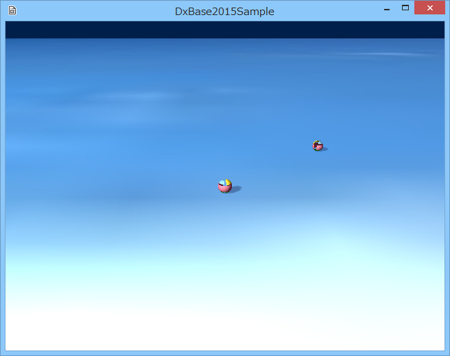

図1003a
ここでは、簡単なアクションが実装されている球体とプレイヤーがあります。プレイヤーはチュートリアルで実装したものとほぼ同じです。
void ActionObject::Update2(){
//何かと衝突していたら
auto ColPtr = GetComponent<CollisionSphere>();
if (ColPtr->GetHitObject()){
auto PtrTrans = GetComponent<Transform>();
auto Pos = PtrTrans->GetPosition();
auto OtherPtr = ColPtr->GetHitObject()->GetComponent<Transform>();
auto OtherPos = OtherPtr->GetPosition();
auto Span = Pos - OtherPos;
auto Span2 = Pos - OtherPos;
//衝突してないと思われる位置まで移動
Span.Normalize();
Span.y = 0.0f;
Span *= 0.125f;
Pos += Span;
Pos.y = 0.125f;
PtrTrans->SetPosition(Pos);
//衝突後移動方向の計算
Span2.Normalize();
Span2 *= 3.0f;
Span2.y = 0.0f;
//お互いの衝突情報をクリアする
//こうしておくと比較的スムーズな反射が得られる
ColPtr->ClearBothHitObject();
//アクションの取得
auto PtrAction = GetComponent<Action>();
//現在のすべてのアクションをクリア
PtrAction->AllActionClear();
//アクションの設定し直し
PtrAction->AddRotateBy(1.0f, Vector3(0, XM_PI, 0));
PtrAction->AddMoveBy(1.0f, Span2);
//ループする
PtrAction->SetLooped(true);
//アクション開始
PtrAction->Run();
}
}